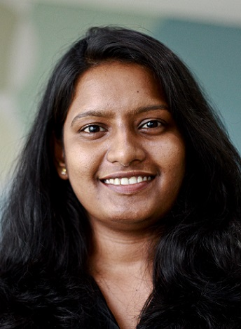

Contact Info
 ramyamaddula@gmail.com
ramyamaddula@gmail.com
 9028240225
9028240225
Summary
Business Analyst with analytics-based consulting experience in addressing sales and marketing issues for clients in the pharmaceutical and healthcare industries
Professional Experience
ZS Associates India Pvt Ltd., Pune, MH | Jul 2014 – Jan 2017
Business Analyst
Part of the customer centric marketing specialization group that enables pharmaceutical companies to transition from traditional promotion channels to digital marketing tactics using innovative methodologies in promotion response and pathway in healthcare
Perform Marketing Mix Modeling and optimize the budget (using RoI & mRoI) for pharmaceutical brands
- Led analytics solution delivery for a $2 MM account with a global pharmaceutical major by creating multichannel customer engagement frameworks which played a crucial role in determining allocation of $15 MM promotional budget across tactics
- Led a team of 3 analysts in creating and validating a content recommendation engine to assist sales representatives while promoting
- Analyzed paid search visits for a product's website and helped cut down $2.55M by reducing key words
- Set goals by micro-targeting the territories for a product leading to 1.2% increase of product share on average
- Responsible for mentoring new recruits in the team as well as training them in SAS, SQL & MS Excel
Skills
- Languages – SAS, R, SQL
- Microsoft Suite (Advanced Excel)
- Creating dashboards with basic VBA and proactive process automation
Education
National Institute of Technology, Calicut
B. Tech (Electronics and Communication Engineering), May 2014
- Graduated with CGPA 7.63
- Volunteer at NSS (National Service Scheme) NIT Calicut branch
- Served in registration committee for RAGAM’13 (cultural fest) and Tathva’13 (technical fest)
Sri Chaitanya Junior College, Vijayawada
Class 12, May 2010
- Major - Mathematics, Physics & Chemistry
- Graduated with 96.9%